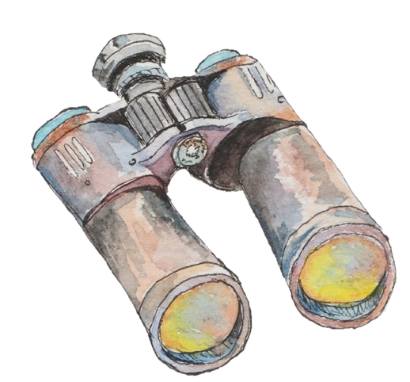

Atelier Nature et Découverte
Plongez au cœur des paysages montagneux et laissez-vous guider à travers des sentiers. Les Ateliers Nature et Découverte sont conçues pour ceux qui souhaitent en apprendre plus sur la nature tout en prenant le temps d'apprécier la beauté de ce qui nous entoure. Je vous ferai découvrir des lieux magiques, loin de l’agitation du monde, où chaque pas devient une invitation à la contemplation.
